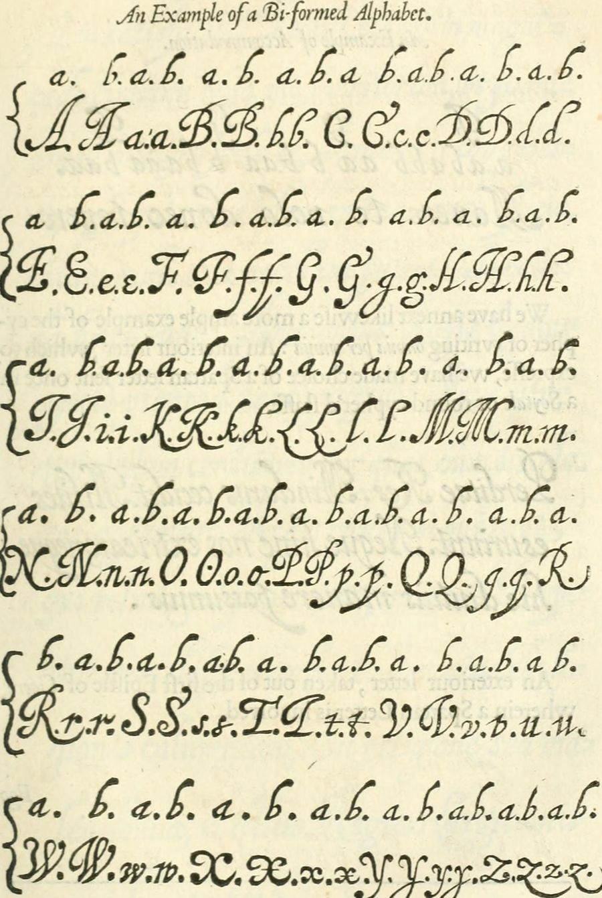

暗号化（平文 → 暗号文）
英字を1文字ずつ、aとbを5つ並べた符号に置き換えます。入力のたびに結果が変わります。
1文字ずつの対応
復号（暗号文 → 平文）
a/b・A/B・0/1のどれで書いた暗号文も読めます。空白は区切りとして読み飛ばします。
ずれ・入れ替え・読み方がわからないときは、解析タブで総当たりできます。
[I/J]・[U/V]は24文字版で同じ符号の字、?の位置の[O/X]のような候補は、1ビット違いで当たる字です。
5ビットずつの読み
埋め込み（カバーテキストに隠す）
メッセージのa/bを、カバーテキストの「キャリア」に1つずつ割り当てます。キャリアは方式で変わります（大小＝英字、太字・斜体＝空白以外の文字、ゼロ幅＝各文字の後ろ）。
プレビュー
経路を通して比べる（生存性）
上のカバーテキストとメッセージを5つの方式で埋め込み、よくある処理（経路）を通したあとでも元のメッセージに戻るかを比べます。見た目の変化が小さい方式が、どの経路で消えるかを確かめられます。
それぞれの経路が起きる場面の例
抽出（カバーテキストから読む）
埋め込み済みのテキストを貼ると、方式に合わせてa/bを読み取り、メッセージに戻します。太字・斜体は、HTML（b・strong・i・emのタグ、font-weight・font-styleの指定）で貼ってください。
解析（読み方を総当たりする）
怪しい文を貼ると、2通りに分かれるもの（a/bの記号、大文字と小文字、A〜MとN〜Z、単語の頭文字、子音と母音、2種類だけの記号、太字・斜体・二書体、ゼロ幅文字）を読み方として、24文字版・26文字版、aとbの入れ替え、0〜4ビットのずれを総当たりし、英語らしい順に並べます。
点数は、英語の文字の出現頻度と英単語の一覧から出す目安です。短い文や英語でない文（ラテン語など）では、正しい読みが上位に来ないことがあります。
読み方ごとの統計
二書体（字の形で読む）
ベーコンは、どの字も2通りの形で書ける「二形のアルファベット」を用意し、隠したい文のaとbに合わせて、見せる文の字の形を1字ずつ選びました。下の表は1640年の英訳に載ったもので、各字の上のa・bが、その形の値です。

字の形を見分ける練習
セリフ（字の端の小さな飾り）のある字がb、ない字がaです。bだと思う字を押してください。押した字の値から、24文字版で読みます。この練習は、字の形を目で見分けます。
対応表
24文字版は、ベーコンが1623年の『De Augmentis Scientiarum』に載せた表と同じです（IとJ、UとVが同じ符号）。セルを押すと符号をコピーします。